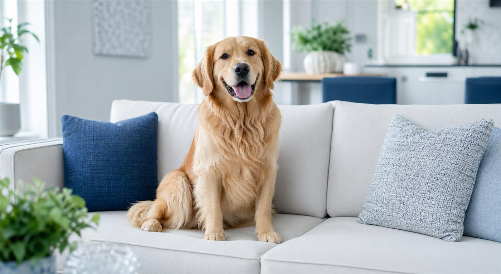

Real Estate & Rentals
Odor removal before listing, tenant turnover, open houses, and move-in dates.
Real estate service
Houston, Texas · Professional odor removal
Pet smells. Smoke. Lingering odors that won’t leave. Professional ozone odor treatment for Houston homes, vehicles, rentals, and real estate listings.
Serving Greater Houston, with regional appointments up to approximately 200 miles by request. Send your address and odor details to get started.
Services
Each service is built around source identification, targeted preparation, ozone treatment, ventilation, and a clean final walkthrough.
Odor removal before listing, tenant turnover, open houses, and move-in dates.
Real estate service
Urine, dander, and animal odors from carpets, upholstery, rooms, and rental properties.
Pet odor serviceCigarette, cigar, cooking smoke, and fire-related smells in homes and apartments.
Smoke odor service
Lingering frying, grease, spice, and burnt-food smells in homes, apartments, and rentals.
Cooking odor service
Freshen cars, trucks, vans, rideshare vehicles, and fleet interiors.
Vehicle odor service
Smoke, pet, cooking, and lingering interior odors in boat cabins, RVs, campers, and travel trailers.
Boat & RV serviceOzone treatment process
Ozone (O3) reacts with odor molecules in air, fabrics, vents, cracks, and porous surfaces. After treatment, optional aroma therapy can add a clean finishing scent before the space is ventilated for normal use.
Identify odor source, affected rooms, materials, and access needs.
Remove or treat source material so ozone can reach the odor pathway.
Run professional ozone equipment in a sealed, unoccupied space.
Add a light finishing scent when appropriate and requested.
Air out the space and confirm it is ready for normal use.
Service area
We help homeowners, property managers, agents, landlords, renters, dealerships, and hosts across Southeast Texas.
Regional requests: Galveston, Lake Jackson, Beaumont, Port Arthur, Orange, Brenham, Bryan–College Station, Huntsville, Livingston, and Lufkin. Extended trips toward Austin and San Antonio are reviewed individually, up to approximately 200 miles from Houston.
Availability and any travel fee depend on your address. Explore our service area →

What you can expect
We review the odor source, affected materials, and preparation before recommending treatment.
People, pets, and plants stay outside the treated area. We explain ventilation and re-entry instructions.
Send your property or vehicle details. Our team will confirm availability and provide your estimate.
Free estimate
Submit the form and your estimate request will be sent to HOUSTON ODOR PROS.
 HOUSTON ODOR PROSFAQ assistant
HOUSTON ODOR PROSFAQ assistant